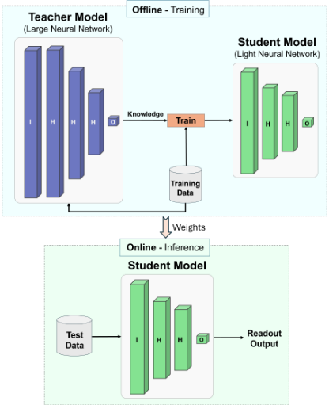
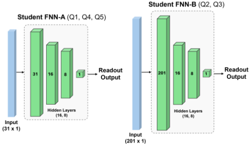
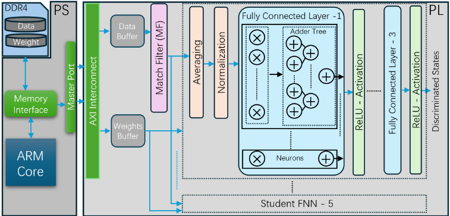
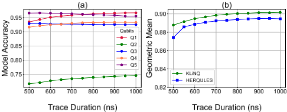
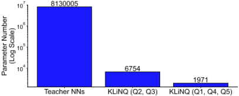

KLiNQ：知识蒸馏辅助的轻量级神经网络用于 FPGA 上的量子比特读出
超导量子计算机中，量子比特读出是最慢且最易出错的环节，现有深度学习读出方案模型庞大、依赖软硬件间往返传输，且要求所有量子比特同步读出，难以支持量子纠错所需的中路测量（mid-circuit measurement）。KLiNQ 为每个量子比特配置独立的小型 FNN 判别器，用知识蒸馏把百万参数级教师网络压缩成仅数千参数的学生网络，并以分段平均的 I/Q 值加 Matched Filter 标量特征作为紧凑输入。设计以 Verilog 实现并部署在 Xilinx Zynq RFSoC（ZCU216）上，100 MHz 下判别延迟仅 32 ns；模型参数较教师网络减少 99.89%，较基线减少 98.93%，五量子比特几何平均保真度达 0.906、平均判别精度约 0.91。该工作体现了模型压缩与软硬件协同设计在资源受限实时场景的价值，但主题属量子计算领域，与本团队存储/互连 IP 的架构、RTL 与验证业务无直接关联。
超导量子比特读出慢且易错，是高保真量子计算的瓶颈。现有基于 FNN 的读出判别器参数量大、软件分类延迟超过量子相干时间；已有 FPGA 方案（HERQULES）要求所有量子比特同步读出、需额外数字解调步骤，且适配单量子比特独立读出时性能显著下降，无法支持 mid-circuit measurement 与实时反馈控制。
离线训练大型教师 FNN（三个隐层分别为 1000/500/250 神经元，输入为 1 µs I/Q 轨迹展平的 1000 维），以硬标签交叉熵加教师软标签 MSE 的复合损失执行知识蒸馏，训练按量子比特信噪比分级的两种紧凑学生 FNN（FNN-A 用于 Q1/Q4/Q5，FNN-B 用于 Q2/Q3）；输入端对选定区间的 I/Q 值取平均降维，并叠加 Matched Filter 标量特征提升 SNR。FPGA 侧采用 32 位定点（16 位整数+16 位小数）、4 级流水线 MAC 时分复用 DSP、加法树求和、以移位近似代替除法完成归一化，PS+PL 架构经 AXI 交换数据，网络规模可重配置。
学生网络参数仅 6,754（Q2/Q3）与 1,971（Q1/Q4/Q5），相对 814 万参数的教师网络压缩率 NCR 达 99.89%；相对 163 万参数的基线模型减少 98.93%
独立读出场景下平均判别精度约 0.91，五量子比特几何平均保真度 F5Q 达 0.906（利用各量子比特最优轨迹时长）
独立读出场景下保真度优于 HERQULES 超过 1%
在 Xilinx Zynq RFSoC（ZCU216）、100 MHz 下判别延迟为 32 ns
读出轨迹缩短至 750 ns 时精度仍保持在 0.9 以上；评估覆盖 1 µs 至 500 ns 的轨迹时长
相比基线 FNN 与 HERQULES：以知识蒸馏将读出网络压缩约两个数量级，并按量子比特独立部署小型判别器，免除全系统同步读出与额外数字解调环节，从而原生支持 mid-circuit measurement；以平均 I/Q 值加 Matched Filter 特征替代原始时序轨迹输入，在大幅降低参数量与 FPGA 资源占用的同时保持约 0.91 的判别精度，并将判别延迟压至 32 ns。
相关度级别：low
命中能力域：无明显对应
理由：论文核心是超导量子计算的量子比特状态判别，属于量子计算 + 神经网络压缩 + FPGA 部署的交叉方向。文中虽包含 Verilog 可综合设计、流水线、定点化等通用数字设计元素，但既不涉及团队存储（LPDDR/HBM/DDR5/MRDIMM）与互连（UCIe）IP 的架构与微架构权衡，也不涉及 UVM 验证、形式验证、仿真加速/Emulation、时序 sign-off 或 EDA 自动化等方法学；其知识蒸馏用于神经网络模型压缩而非验证流程或 RTL 生成，七个能力域均无实质命中，故判定为基本无关联。
建议动作：暂不相关
arXiv:2503.03544v1 [quant-ph] 2025年3月5日
Xiaorang Guo ∗,1、Tigran Bunarjyan ∗,1、Dai Liu 1、Benjamin Lienhard 2,3 与 Martin Schulz 1 1 慕尼黑工业大学计算机体系结构与并行系统讲席，德国加兴 2
普林斯顿大学化学系，美国新泽西州普林斯顿 08544
3 普林斯顿大学电气与计算机工程系，美国新泽西州普林斯顿 08544 电子邮件：{ xiaorang.guo, tigran.bunarjyan, dai.liu } @tum.de, blienhard@princeton.edu, schulzm@in.tum.de
摘要——超导量子比特是构建量子信息处理器最有前景的候选方案之一。然而，它们常常受到缓慢且易出错的量子比特读出的制约——而读出是实现高保真度操作的一个关键因素。尽管包括深度神经网络在内的现有方法能够提升读出精度，但它们通常缺乏对量子纠错至关重要的线路中途测量的支持，并且通常依赖于庞大且资源密集型的网络模型。本文提出KLiNQ，一种新颖的量子比特读出架构，它利用通过知识蒸馏优化的轻量级神经网络。与基线相比，我们的方法在保持91%量子比特态判别精度的同时，将模型大小缩减了约99%。KLiNQ通过为每个量子比特分配一个专用的紧凑神经网络，实现快速、独立的量子比特态读出，从而支持线路中途测量。我们的设计在Xilinx UltraScale+ FPGA上实现，能够在32 ns内完成判别。结果表明，经压缩的神经网络能够在保持高保真度独立读出的同时实现高效的硬件实现，从而推动实用量子计算的发展。
索引词——超导量子比特、量子比特读出、知识蒸馏、FPGA
量子计算机有望通过利用量子力学特性，比经典计算机快得多地解决特定的复杂问题。在各种量子比特（qubit）技术中，超导量子比特以其快速的门操作和高保真度而脱颖而出。然而，在超导量子计算机的控制流水线中，量子比特读出仍然是最慢且最容易出错的过程之一 [1], [2]。在这种情况下，提高量子比特读出精度有助于实现高保真度的量子计算机。加速读出过程对于在有限的相干时间内支持大型量子线路的运行至关重要。
∗ 同等贡献。
本研究由德国联邦教育与研究部（BMBF）在“量子技术——从基础研究到市场”资助计划下资助，合同编号为 13N16087，同时获得慕尼黑量子谷（MQV）的资助，后者由巴伐利亚州政府以“巴伐利亚高技术议程”（Hightech Agenda Bayern）的资金支持。
量子比特读出是一个同时涉及模拟和数字操作的复杂过程。在本工作中，我们聚焦于数字部分，即处理从模数转换器（Analog-to-Digital Converters, ADCs）获得的同相（I）和正交（Q）信号，以判别量子比特状态（'0' 和 '1'）。该过程也被称为单次量子比特态判别 [3], [4]。为了实现高保真度的量子比特读出，需要一种鲁棒且精确的判别算法。先前的工作已应用简单的机器学习或统计技术，例如支持向量机（SVMs）[5]、隐马尔可夫模型 [6] 和匹配滤波器（MFs）[7]，以提高读出保真度。然而，这些方法仍无法满足高保真度量子计算的要求。因此，Benjamin 等人 [3] 提出了一种基于深度神经网络的方法，显著提升了读出精度。该方法采用前馈神经网络（Feed Forward Neural Network, FNN）架构，直接将从 ADCs 获得的时序数字化信号作为输入，无需后处理。经过训练后，它能够以高精度对所有量子比特的状态进行分类。
尽管 FNN 能够有效判别量子比特状态，但基于软件的分类所带来的开销对超导量子计算机构成了重大挑战。由于读出信号必须在控制与读出的硬件和软件之间反复传输，由此产生的延迟往往超过量子比特的相干时间 [8]。因此，读出判别器必须实现在专用硬件上。
在本节中，我们讨论超导量子比特的读出原理，并介绍知识蒸馏作为一种网络压缩方法。
在量子计算中，量子比特（qubit）是存储信息的基本单元，能够以叠加方式同时表示'0'和'1'两种状态，可由公式 | ψ ⟩ = α | 0 ⟩ + β | 1 ⟩ 表示，其中 | α | 2 + | β | 2 = 1 。在测量时，量子比特会坍缩为'0'或'1'，从而失去其叠加特性。这一过程称为量子比特读出。对于超导量子比特，读出通常通过向量子比特谐振器发送持续几百纳秒至几微秒的微波脉冲来实现 [11], [12]。根据量子比特状态的不同，穿过谐振器的微波会经历与量子比特状态相关的相移，随后被下采样，最终由模数转换器（ADC）数字化为 I 和 Q 值。这些 I/Q 值在读出过程中随时间波动，且其轨迹会依据量子比特状态沿不同的收敛路径变化，正如 Maurya 等人 [9] 所介绍的。在此，我们着重于利用神经网络分析这些轨迹，以高精度且尽可能早地判别量子比特的状态。
知识蒸馏是一种模型压缩技术，它将知识从大型、复杂的神经网络（即“教师”网络）迁移到更小、更高效的“学生”网络，从而能够构建轻量级模型，这些模型在显著降低计算与内存需求的同时，仍保留其大型对应模型的预测能力 [13], [14]。训练过程将标准监督学习与蒸馏目标相结合，使学生的输出与教师的软化概率对齐，而后者携带着细微的类别关系信息 [15]。由于推理阶段仅需轻量级的学生网络，该方法在现场可编程门阵列（FPGA）等资源受限的环境中尤为有效，因为在这类环境中，实时性能与效率至关重要。此外，知识蒸馏对于需要复杂模式识别的任务（例如量子计算中的量子比特状态读出）也颇具优势，有助于构建在保持高精度的同时针对降低资源消耗与可扩展性进行优化的模型。
图 1 展示了本工作所提出的系统架构，该架构将离线训练与蒸馏方案同在线推理过程相结合。本节将讨论知识蒸馏在该系统中的一般执行方式，以及通过软硬件协同设计所采用的优化策略，以提升性能并获得 KLiNQ 的最优模型。
为了构建一个用于知识蒸馏的鲁棒教师模型，我们开展了大量实验，以确定一种能够在精度、泛化能力和效率之间实现有效平衡的架构。先前研究 [3], [9], [10] 已表明，在量子比特态读取任务中，前馈神经网络（FNN）的性能优于卷积神经网络（CNN）和循环神经网络（RNN）。与更复杂的架构相比，FNN 的简洁性与灵活性使其能够高效处理 I/Q 轨迹，并确保鲁棒的泛化能力，因而成为该应用的理想选择。
教师 FNN 使用被展平为 1000 个输入的复用 I/Q 信号轨迹，在 1 µs 的量子比特测量数据上进行训练。该网络架构包含三个隐藏层，神经元数量分别为 1000、500 和 250，其后接一个用于二分类的输出层，以区分量子比特态（'0'

或 '1'），并对所有量子比特的保真度分数进行优化。我们采用各量子比特分配保真度的几何平均值来评估网络模型，并将其作为判别准确率的主要指标。该几何平均保真度 F GM 定义为：
其中，N 表示量子比特的总数，F i 为每个量子比特的读取准确率。该指标通过惩罚准确率较低的离群值来强调性能的一致性，从而确保模型在所有量子比特上均具有可靠的性能。
为了确保学生网络从软硬件协同设计的角度实现高保真度与高计算效率，我们需要将输入表示优化得尽可能小。这涉及两个关键步骤：(1) 在精心选择的区间上对测量结果取平均，以及 (2) 引入匹配滤波器（MF）以增强信号质量。
1) 区间值平均：我们执行一系列步骤对各量子比特专属的轨迹进行预处理，以在保持分类准确率的同时获得紧凑的输入尺寸。我们通过实验确定了对每条轨迹的 I 和 Q 分量取平均的最优测量区间，从而有效缩短轨迹时长并降低维度。平均操作通过汇总时序特征，将原始数据压缩为维度更低的表示，同时保留了分类所必需的最显著特征。

2) 匹配滤波器：尽管平均操作显著减小了输入尺寸，但实验表明，仅靠平均后的轨迹无法实现较高的分类保真度，尤其是对于量子比特态读取信号差异细微的量子比特。为解决这一问题，我们引入 MF 以提供额外特征，从而增强学生模型的判别能力。每个量子比特的 MF 包络是通过最大化基态（'0'）轨迹与激发态（'1'）轨迹之间的分离度来训练得到的。该包络的计算公式为：
其中，T 0 和 T 1 分别表示基态和激发态的读取轨迹。在推理阶段，MF 输出的计算方式是将训练得到的包络通过点积运算应用于相应轨迹，从而得到单一标量特征。该标量值与平均后的 I 和 Q 分量一起，作为额外的输入特征，构成学生模型的代表性输入。实践证明，该方法通过提升信噪比（SNR）并捕捉量子比特特有的动态特性，显著提升了学生模型的性能。
本文采用知识蒸馏技术，将教师网络的预测能力迁移到更小、更高效的学生网络中。该过程的主要目标是确保学生模型在实现紧凑架构的同时保持较高的分类准确率，从而适用于资源受限的环境。
蒸馏训练：训练过程通过最小化一个复合损失函数，教导学生网络复现教师网络的行为。该损失函数由两部分组成：（1）监督学习目标，确保学生网络从数据集的真实标签（硬标签）中学习；（2）蒸馏目标，使学生网络的输出与教师网络的预测（软标签）保持一致。复合损失函数 L distill 定义为：
其中，L CE 表示二元交叉熵损失，由学生网络的预测与真实标签（硬标签）之间计算得到；L KD 表示蒸馏损失，计算为教师网络与学生网络软化后的 logits（软标签）之间的均方误差（MSE）；α 为权重因子，用于平衡监督学习与蒸馏两部分。
蒸馏过程与推理：如前文图1所示，蒸馏发生在训练阶段，其中教师模型先在数据集上进行预训练，随后用于指导学生模型。预训练好的教师网络提供软化后的概率（软标签），作为学生网络蒸馏过程的补充监督信号。学生网络以随机权重初始化，通过梯度下降进行训练，以最小化复合损失 L distill。
在推理阶段，仅部署学生模型，这些模型已通过离线蒸馏继承了教师网络的预测能力。学生模型的紧凑设计支持高效、低开销的推理，使其非常适合在后续的现场可编程门阵列（FPGA）实现中用于量子比特态判别。
基于实验观察，我们现在介绍两种不同的学生网络架构，如图2所示：一种是小型前馈神经网络（FNN）FNN-A，用于量子比特1、4和5，这些量子比特表现出较高的信噪比（SNR），更易于判别；另一种是相对较大的FNN-B，用于量子比特2和3，其SNR欠佳，尤其是量子比特2。请注意，网络的输入尺寸是固定的，当迹线长度发生变化时，我们会动态调整待平均的样本数量，以匹配所需的输出尺寸。在本节中，我们以长度为1 µs的迹线为例进行说明。
这些架构是在平衡保真度、计算效率和输入尺寸方面选出的最优配置。
在本节中，我们描述轻量级学生神经网络在 FPGA 上的部署，并讨论其架构。如第 III 节所述，由于量子比特的特性各不相同，我们设计了不同尺寸的神经网络，以在精度与效率之间取得平衡。在此情况下，我们在 FPGA 上开发的网络在尺寸上也是可重新配置的。
图 3 展示了基于 FPGA 的前馈神经网络（FNN）的整体结构，其由 DDR 存储器、处理系统（PS）部分和可编程逻辑（PL）组件构成。DDR 存储器负责存储量子比特迹线的测试数据以及神经网络训练所得的权重。值得注意的是，在实际量子系统中，KliNQ 可直接处理来自模数转换器（ADC）的原始数据以执行状态判别。然而，本工作聚焦于算法与 FPGA 实现，因此我们使用 DDR 存储器来存储迹线作为替代。PS 充当存储器与我们的定制逻辑之间的数据交换接口，通过 AXI 总线协议将量子比特迹线、必要参数和权重传输至 PL。
在 PL 中，我们采用模块化设计方法依次部署各个 FNN 层，从而实现流水线功能。如第 III-D 节所讨论的，我们针对不同的量子比特开发了两种网络架构以优化性能。尽管这些模型在配置上有所不同，但它们共享相同的整体架构。因此，我们不再分别介绍，而是提供统一的概述。我们选用 32 位定点格式进行数据表示，将 16 位分配给整数部分、16 位分配给小数部分，以保持判别精度。
遵循第 III-D 节所述的架构，数据预处理阶段首先由一个平均层计算一组量子比特的平均值，从而减小神经网络的输入尺寸并最小化资源占用。随后是一个归一化层，该层优化数据分布、提高算法效率，并降低全连接层（其中执行多次乘法与加法运算）发生溢出的风险。为实现归一化，本工作采用表达式 x - x min σ x，其中 σ x 表示所观测量子比特迹线的标准差。原始公式通常需要除法运算，这会在 FPGA 上消耗大量资源和时间，限制实时性能。然而，由于 x min 和 σ x 在训练阶段即已准备就绪，σ x 也被近似为 2 的幂。因此，我们用移位运算替代除法，仅需两个时钟周期即可获得结果。与此同时，另一个特征从 MF 层中提取。鉴于其运算与数据流（乘累加（MAC））完全相同，该层复用了与全连接层相同的设计，后者将在后文简要介绍。
归一化之后，我们将 I 和 Q 值与 MF 特征拼接成单一输入向量，然后送入全连接层。在每一层内部，神经元操作并行执行，因此一层的延迟等于单个神经元的延迟。神经元在 4 级流水线中执行输入-权重乘法，利用 FPGA 上的时分复用 DSP 资源，这些资源专门负责执行这些乘法运算。每次乘法均采用纯组合逻辑实现，延迟为一个时钟周期，因此乘法的总延迟为四个周期。各输出与偏置一起通过加法树结构（如图 3 所示）进行求和，延迟为 ⌈ log 2 ( n ) ⌉ + 1，其中 n 为输入数量。不过，由于取上限运算的存在，延迟会随输入数量略有变化。每个全连接层之后接一个 ReLU 激活函数，用于在层间引入非线性。通过检查符号位来决定输出是保持不变还是置零。此外，在激活层中对溢出情况进行管理，以确保功能正确。同时，我们在激活层中处理溢出，以保证功能正确。随后，整个过程再重复两次，最终得到一个单一数值作为判别结果。

数据集与基线：在本工作中，我们使用来自一个包含五个量子比特的超导量子信息处理器的实测实验数据来训练和评估我们的方法 [3]。该数据集包含所有 32 种可能的量子比特状态排列的测量结果，其中每个量子比特的状态由按顺序记录的 Q 和 I 值来表征。尽管完整记录的轨迹跨度为 2 µs，但我们的分析仅使用前 1 µs，因为与完整序列相比，该时长可提供几乎相同的判别精度。在网络评估中，我们采用与先前工作 [3]、[9] 类似的设置，即每种量子比特状态配置使用 15,000 条轨迹用于训练，35,000 条轨迹用于测试。
此外，我们在对比中使用文献 [3] 作为基线模型。
FPGA 硬件：本设计的硬件实现采用 Verilog 编写，并使用 Xilinx Vivado 2024 进行综合。完整项目部署在 Xilinx Zynq RFSoC（ZCU216）[16] 上，工作频率为 100 MHz。
我们首先评估判别器的一项关键指标：读出保真度。表 I 展示了在读出轨迹长度为 1 µs 的条件下，KLiNQ 与相关工作的读出保真度对比。该对比包括五个量子比特各自的读出准确率，以及读出保真度的几何平均值。为了提供全面的对比，我们计算了两个几何平均值：一个针对全部五个量子比特，另一个则排除量子比特 2，因为噪声会显著影响其性能。基线前馈神经网络（FNN）与 HERQULES 的原始论文均面向五量子比特同步读出系统设计。然而，在本对比中，我们复现了它们的设计，并在独立读出上对其架构进行了测试。结果表明，与大型基线模型相比，KLiNQ 取得了具有竞争力的保真度，并以超过 1% 的优势优于 HERQULES。此处我们排除了文献 [10]，因为其未明确报告准确率。
| 0 | 1 | 2 | 3 | 4 | 5 | 6 | 7 |
|---|---|---|---|---|---|---|---|
| Design | Qubit 1 | Qubit 2 | Qubit 3 | Qubit 4 | Qubit 5 | F 5 Q | F 4 Q |
| Baseline FNN 1 | 0.969 | 0.748 | 0.940 | 0.946 | 0.970 | 0.910 | 0.956 |
| HERQULES 2 | 0.965 | 0.730 | 0.908 | 0.934 | 0.953 | 0.893 | 0.940 |
| KLiNQ | 0.968 | 0.748 | 0.929 | 0.934 | 0.959 | 0.904 | 0.947 |
| 0 | 1 | 2 | 3 | 4 | 5 | 6 | 7 |
我们进一步评估了 KLiNQ 读出性能在不同轨迹持续时间下的鲁棒性。表 II 总结了轨迹持续时间从 1 µs 缩短至 500 ns 时的读出保真度。尽管全部五个量子比特的几何平均保真度随轨迹变短而下降，但某些量子比特在特定的较短持续时间下达到最佳性能，并以绿色标出。通过为每个量子比特采用最佳轨迹持续时间，KLiNQ 将五量子比特保真度（F 5 Q）提升至 0.906。各保真度随轨迹长度变化的行为也描绘于图 4(a) 中，其中除量子比特 2 之外的所有量子比特均表现出一致且稳健的行为。此外，图 4(b) 表明，与最先进的 HERQULES 相比，KLiNQ 保持了更优的读出保真度与鲁棒性，在读出轨迹持续时间较短时表现尤为出色。
| Design | Duration | Qubit 1 | Qubit 2 | Qubit 3 | Qubit 4 | Qubit 5 | F 5 Q |
|---|---|---|---|---|---|---|---|
| KLiNQ NNs | 1 µ s | 0.968 | 0.748 | 0.929 | 0.934 | 0.959 | 0.904 |
| KLiNQ NNs | 950ns | 0.967 | 0.744 | 0.925 | 0.934 | 0.956 | 0.901 |
| KLiNQ NNs | 750ns | 0.962 | 0.736 | 0.927 | 0.932 | 0.963 | 0.9 |
| KLiNQ NNs | 550ns | 0.944 | 0.72 | 0.93 | 0.921 | 0.967 | 0.891 |
| KLiNQ NNs | 500ns | 0.935 | 0.717 | 0.929 | 0.917 | 0.966 | 0.887 |
| Design | Duration | Qubit 1 | Qubit 2 | Qubit 3 | Qubit 4 | Qubit 5 | F 5 Q |

网络压缩率（NCR）是评估知识蒸馏的关键指标。为评估该指标，我们将 KLiNQ 五个独立量子比特判别系统中的参数数量与教师神经网络（NN）架构中的参数数量进行了比较。如图 5 所示，各教师 NN 合计拥有高达 814 万个参数。相比之下，KLiNQ 的学生 NN 极为紧凑：较大的 FNN（用于量子比特 2 和 3）仅包含 6,754 个参数，而较小的 FNN（用于量子比特 1、4 和 5）仅包含 1,971 个参数。相对于教师神经网络，这对应于 99.89% 的 NCR。此外，与拥有 163 万个参数的基线模型相比，KLiNQ 的网络规模也实现了高达 98.93% 的显著缩减，凸显了其知识蒸馏策略的卓越效率。
表 III 总结了所提出设计各子组件的 FPGA 资源利用率与模型延迟，其中包括用于 I/Q 两路分量的匹配滤波器（MF）、平均与归一化模块（AVG&NORM）以及神经网络。MF 在所有量子比特之间采用时分复用，因此其资源占用在整个设计中仅统计一次。相比之下，AVG&NORM 模块与神经网络则针对每个量子比特分别例化，并根据设置需求选择小型或大型配置。

总延迟由各流水线组件的延迟求和得到。由于较长轨迹（1 µs）与较短可接受轨迹（550 ns）的样本对数值相同，延迟在所有读出轨迹上保持恒定。此外，尽管较大的模型推理需要更多时间，但其受益于更短的平均分组，从而降低了平均处理时间。因此，两个模块在 100 MHz 下恰好产生相同的 32 ns 执行延迟。
资源利用率还可以进一步优化，因为当前设计以最小化判别延迟为优先，牺牲了时分复用以实现更快的分类。因此，可以根据具体的延迟需求进行权衡，以在资源效率与性能之间取得平衡。
| Components | LUT | FF | DSP | Latency ( ns ) |
|---|---|---|---|---|
| Shared Resources | Shared Resources | Shared Resources | Shared Resources | Shared Resources |
| MF | 27180 (6.39%) | 24052 (2.83%) | 375 (8.78%) | 11 |
| Per-Qubit Resources: Qubits 1, 4, 5 | Per-Qubit Resources: Qubits 1, 4, 5 | Per-Qubit Resources: Qubits 1, 4, 5 | Per-Qubit Resources: Qubits 1, 4, 5 | Per-Qubit Resources: Qubits 1, 4, 5 |
| AVG&NORM | 17770 (4.2%) | 11415 (1.35%) | 0 (0%) | 9 |
| Network | 8840 (2.08%) | 6020 (0.71%) | 55 (1.28%) | 12 |
| Per-Qubit Resources: Qubits 2, 3 | Per-Qubit Resources: Qubits 2, 3 | Per-Qubit Resources: Qubits 2, 3 | Per-Qubit Resources: Qubits 2, 3 | Per-Qubit Resources: Qubits 2, 3 |
| AVG&NORM | 19600 (5%) | 17500 (2%) | 0 (0%) | 6 |
| Network | 25882 (8.44%) | 23172 (2.72%) | 226 (5.29%) | 15 |
| Components | LUT | FF | DSP | Latency ( ns ) |
这项工作提出了一种独立读出方案，以支持电路中途测量与纠错，而无需将所有读出同步整合到一个统一的大型神经网络中。尽管带来了这一优势，但由于量子系统固有的特性，它也引入了重大挑战。正如 Benjamin 等人 [3] 在先前工作中所强调的，频率复用读出中的串扰以及量子比特之间的相关性是误差的主要来源。因此，在不考虑量子比特间影响的情况下分离各路读出，不可避免地会导致保真度下降。这一权衡在我们的结果中同样明显：对于五量子比特系统，独立读出方法的性能始终不及大型网络。然而，这一步是推动系统迈向容错量子计算（FTQC）的必要方向。
另一方面，这种保真度上的牺牲凸显了在独立读出方案中抑制串扰的复杂性。因此，未来的工作将侧重于把串扰信息整合到教师模型中，从而使学生模型能够学习并补偿这些影响。此外，探索大型网络中的掩码技术可作为另一种有效策略，以将这些误差降至最低。通过纳入这些考量，我们旨在提升各路独立读出的保真度，最终推动纠错量子计算的实用化。
本文介绍了 KLiNQ，这是一种利用知识蒸馏来训练面向 FPGA 实现优化的轻量级神经网络的方法。我们提出了一种针对单个量子比特态读出的判别器，能够在保持高读出保真度的同时实现电路中途测量。实验结果表明，KLiNQ 实现了约 0.91 的平均量子态判别精度，并且即使在读出轨迹缩短至 750 ns 的情况下，仍能保持 0.9 以上的精度。基于 FPGA 的实现具有低硬件成本和 32 ns 的超快延迟。总体而言，我们的工作凸显了网络压缩技术在实现高效、基于硬件的量子态读出方面的潜力。